TERROR
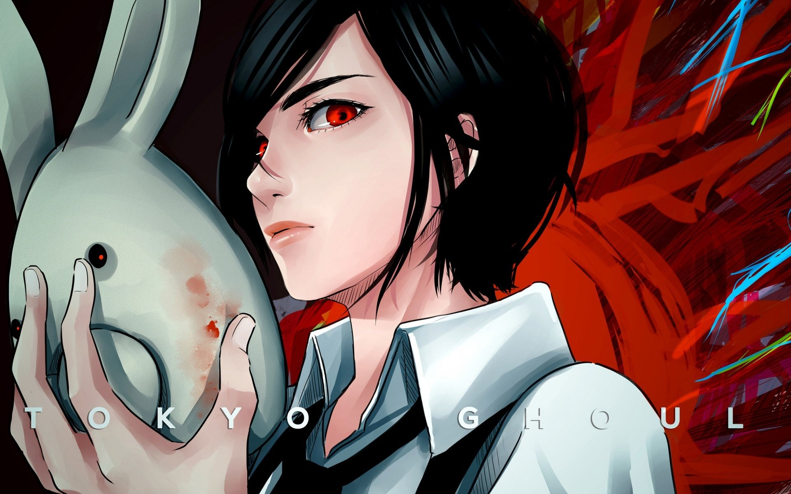Etimologia
hay una escuela encantada, las cosas van mal en algún lugar de un vecindario, y ahora hay un fantasma, ser, espíritu o algo enojado que está creando encuentros espeluznantes y aterrorizando a la gente o matándola. Eso es más o menos lo que sobresale del anime Horror. Afortunadamente, sin embargo, a Japón le encantan sus historias de terror. Curiosamente, también Japón tiene la costumbre de hacer casas de terror en verano. Así es, olvídate de Halloween, los japoneses creen que si se dan escalofríos en verano, pueden combatir el calor. ¡Pues bienvenido! Si eres nuevo aquí o estás buscando un buen lugar para aterrizar cuando se trata de anime de terror, lo tenemos cubierto. Entonces, ya sea que te gusten los bichos espeluznantes, los lugares espeluznantes, las niñas espeluznantes o simplemente disfrutas de un buen fantasma.
Caracteristicas
Todo anime de terror siempre lleva una buena cargar de eventos sobrenaturales y hasta algunos monstruos incluídos, ya sean externos o internos. Parasyte está lleno de horror corporal, invasiones alienígenas y pseudocanibalismo. Lo número uno que el anime siempre hará mejor que las películas es transportarte a un mundo espeluznante donde, aunque no siempre esperes que sucedan las cosas que suceden. La cuestión es que, si bien el espectador puede ver algunos, otros simplemente aparecen debido al hecho de que el anime es extrañamente desarmador. Si algo es seguro, puede que sean de terror japonés, pero siempre tienen un aspecto peculiar.
Animes Famosos
High School Of The Dead (2011)
Parasyte (2014)
Elfen Lied (2004)
Tokyo Ghoul (2014)
Another
El mundo ha sido diezmado por una pandemia desconocida que transforma a las personas en zombis necrófagos a través de las mordidas. La historia sigue a Takashi Komuro, un estudiante del Instituto Fujimi que sobrevivió al brote inicial junto a algunos estudiantes de su escuela, con quienes luego entabla amistad y juntos intentarán mantenerse con vida, primero mientras escapan del colegio y posteriormente al viajar por la ciudad en busca de armas y una ruta que los reúna con sus familias y posteriormente los lleve a un lugar seguro. Este viaje no será fácil, ya que los muchachos deberán madurar aprendiendo a combatir y trabajar como equipo, lidiando con la muerte y protegiéndose no solo de los muertos vivientes, sino también de muchos de las personas sobrevivientes, que bajo la presión de esta catástrofe comenzarán a mostrar lo peor de su naturaleza.
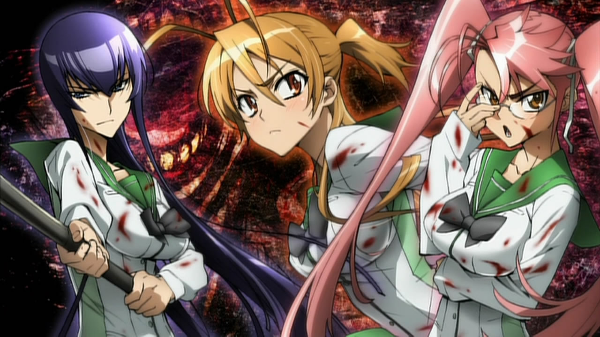 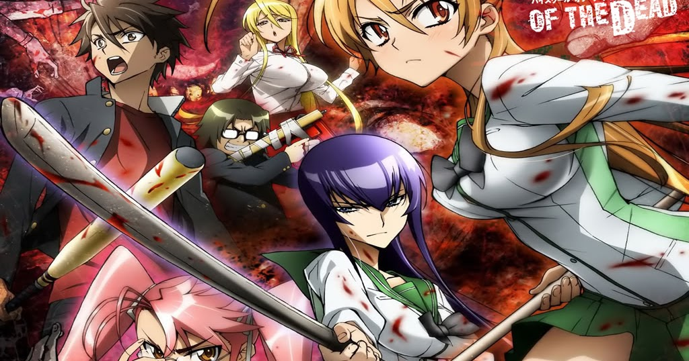El personaje principal de la serie es un joven de 17 años llamado Shinichi Izumi que vive en un tranquilo barrio de Tokio junto con sus padres. Todo cambia cuando el vecindario es invadido por extraterrestres los cuales pueden entrar a tu cuerpo e invadirlo. Son como unos gusanos. Uno de ellos quiere meterse dentro de Shinichi, pero no lo logra y termina poseyendo su brazo. Shinichi de alguna manera se las arregla para evitar que infecte a cualquier otra parte de su cuerpo. Lo convierte en una especie de híbrido con ambas entidades (el humano y el brazo alienígena) conservando su personalidad e intelecto.
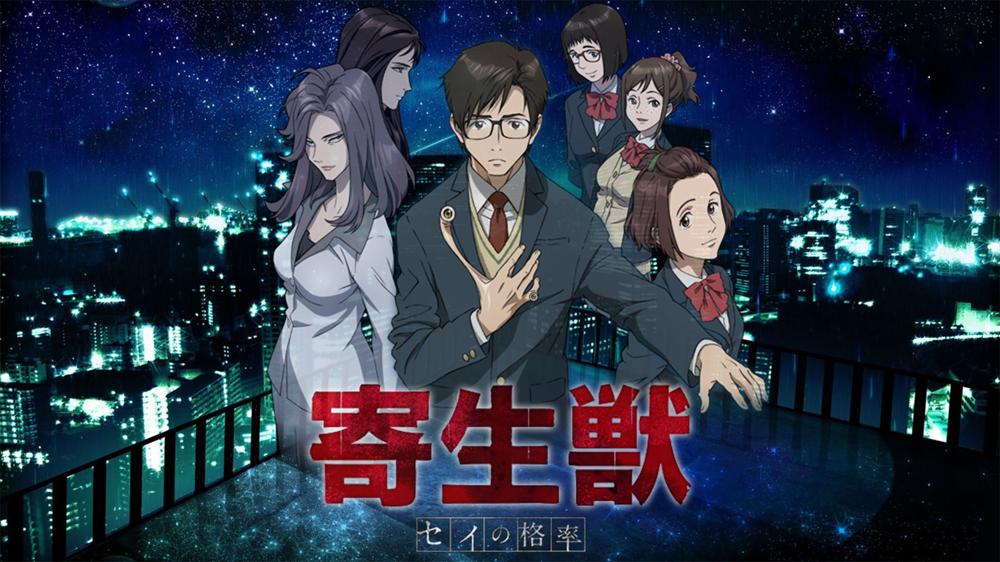 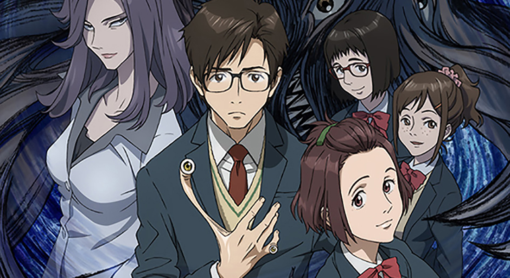Este anime es de temática de horror y psicológica y seguramente te dará pesadillas por las noches. La historia gira en torno a los mutantes humanos con cuernos, conocidos como Diclonius, que tienen fuertes poderes telequinéticos entre muchas otras habilidades. Los Diclonius se encuentran todos encerrados y aislados de la sociedad dentro de un centro de investigación, dirigido por el gobierno. El problema empieza cuando uno de ellos logra escapar. Pero el Diclonius es herido en el proceso. Unos muchachos lo encuentran y lo llevan a su casa. Este Diclonius tiene apariencia y cuerpo de mujer, y los jóvenes no saben que es un monstruo.
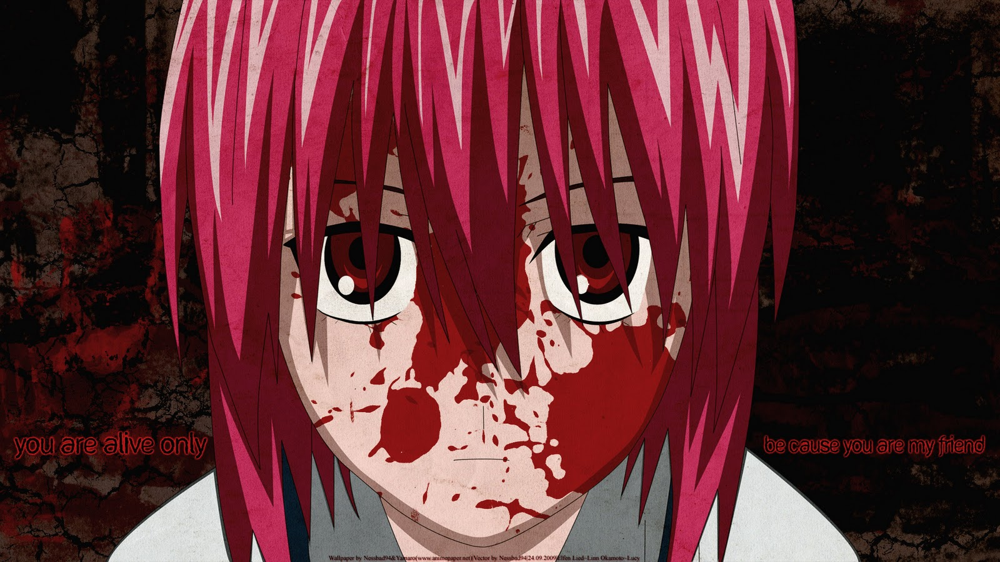 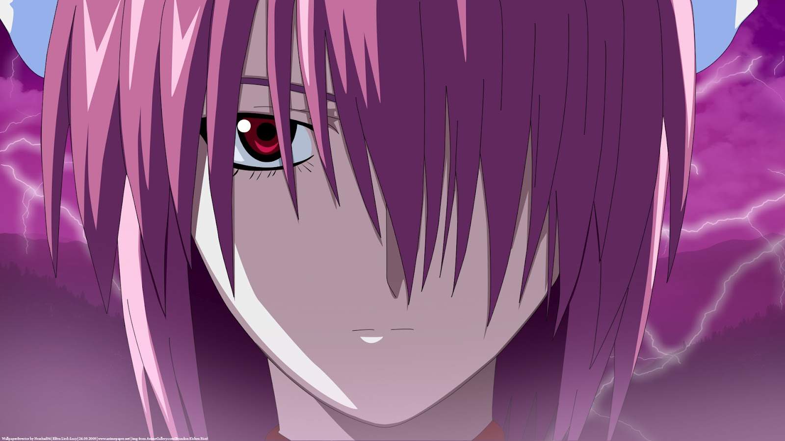Un anime que ha sido muy popular desde su lanzamiento en 2014 es Tokyo Ghoul. Su temática podría parecer cliché pero tiene un acercamiento menos convencional que la mayoría de los animes que entran en esta categoría. Trata de las creaturas llamadas Ghouls. Estas están muy por encima de los zombies promedio, ya que se ven exactamente como los humanos y pueden mezclarse fácilmente con la sociedad. Lo que los diferencia de los humanos es que, mientras los humanos comen todo aparte de carne humana, los ghouls solo pueden comer humanos y tienen poderes especiales caza-humanos.
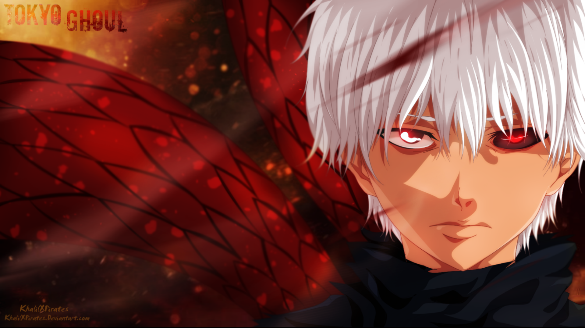 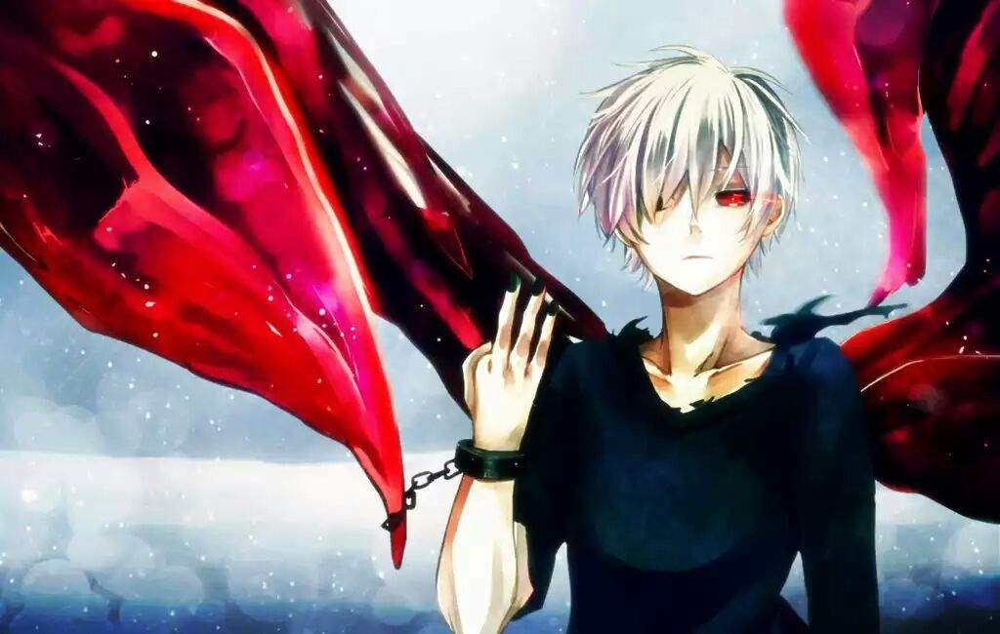La historia comienza con el cuento de que la clase 3-3 de Yomijama North Middle School está maldita. Esto se debe a la muerte de un estudiante de esa clase en 1972, seguido de que todos los compañeros de su mismo año fingieran que nada había ocurrido. Por eso esta clase ha sido maldecida. La historia comienza con el cuento de que la clase 3-3 de Yomijama North Middle School está maldita. Esto se debe a la muerte de un estudiante de esa clase en 1972, seguido de que todos los compañeros de su mismo año fingieran que nada había ocurrido. Por eso esta clase ha sido maldecida.
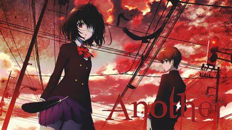 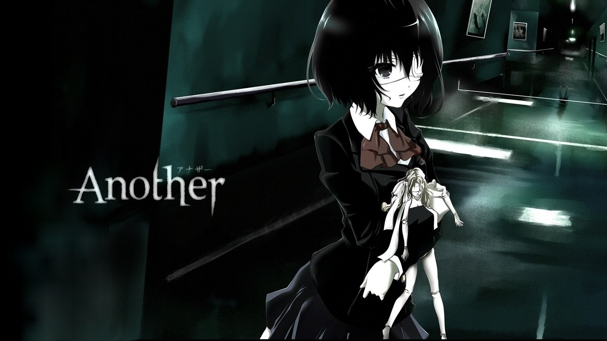